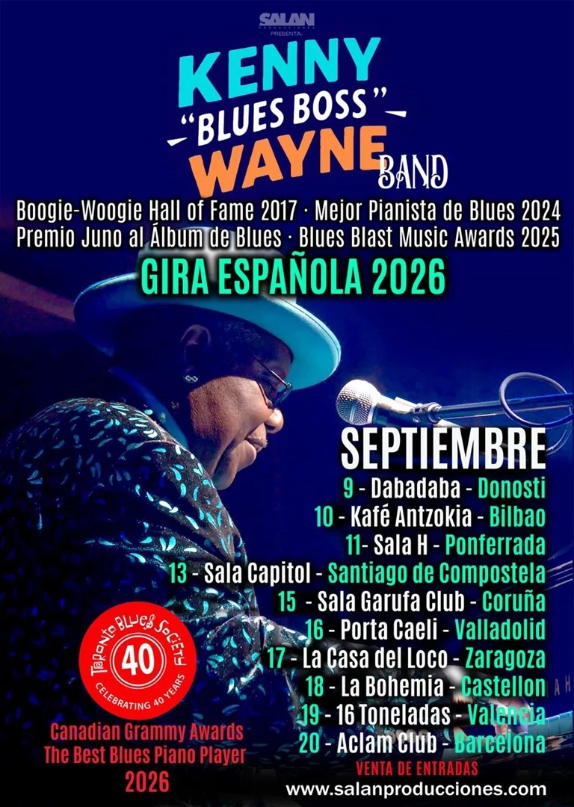

Gira España Septiembre 2026 · 9 ciudades
El pianista más electrizante del boogie-woogie desembarca en España con su banda completa. Boogie-Woogie Hall of Fame 2017 · Mejor Pianista de Blues 2024 · Premio Juno al Ãlbum de Blues.
Kenny "Blues Boss" Wayne en directo — lo que te espera en septiembre
Kenny Wayne nació en New Westminster, Columbia Británica (Canadá), y desde niño quedó atrapado por el boogie-woogie y el blues que sonaba en casa. Con más de cuatro décadas encima de los escenarios, se ha convertido en uno de los pianistas de blues más respetados del mundo. En 2017 fue nombrado miembro del Boogie-Woogie Hall of Fame, y en 2024 recibió el galardón al Mejor Pianista de Blues. Su álbum más reciente fue premiado con el Blues Blast Music Award 2025 y el Premio Juno al Ãlbum de Blues, el Grammy canadiense.
Con su banda completa, Kenny ofrece un show en directo que mezcla potencia, humor y alma a partes iguales. Su piano rebota entre el boogie más desbocado y el blues más profundo, arrastrando al público desde el primer acorde. La Gira España 2026 es una oportunidad única de verle en salas Ãntimas antes de que los grandes escenarios se lo lleven definitivamente.
9 ciudades. Salas Ãntimas. El boogie-woogie más poderoso del mundo en directo.
🎟 Comprar EntradasSalan Producciones trae a Kenny "Blues Boss" Wayne Band en su primera gran gira española. De la mano de Juan Salán, promotor musical de referencia con más de 38 años de trayectoria en Canarias y España, esta gira recorre 9 ciudades en septiembre de 2026: Donosti, Bilbao, Ponferrada, Santiago de Compostela, A Coruña, Madrid, Zaragoza, Castellón y Valencia.
Si buscas conciertos de blues en España, boogie-woogie en Madrid, música en directo en Bilbao o piano blues en Valencia, esta es tu oportunidad. Kenny Wayne es uno de los últimos grandes maestros del piano blues clásico en activo, con una energÃa en directo que deja sin palabras.
SÃguenos en salanproducciones.com para estar al tanto de todos los próximos conciertos en España y Canarias.